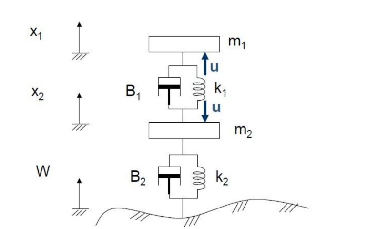
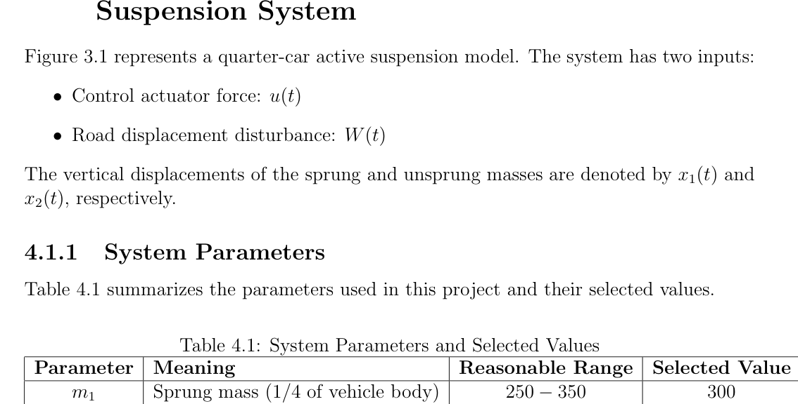
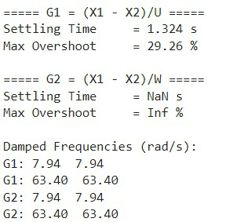
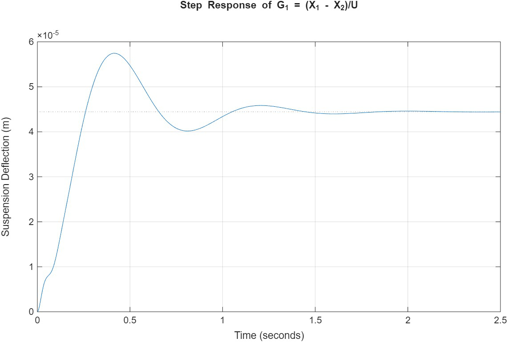
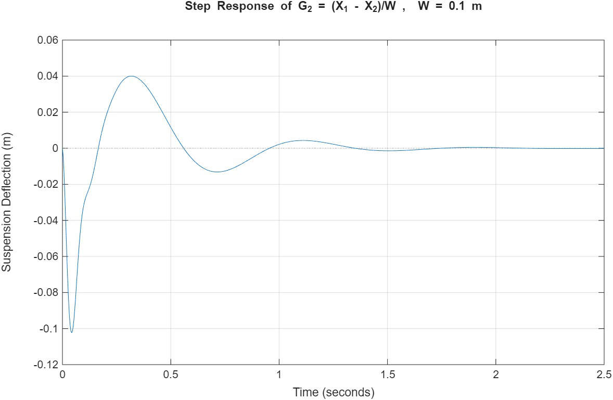
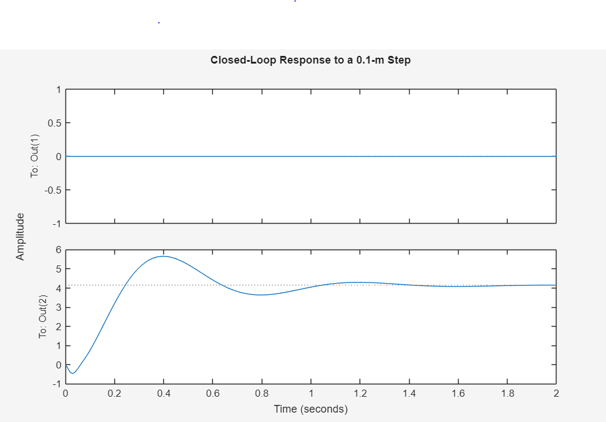
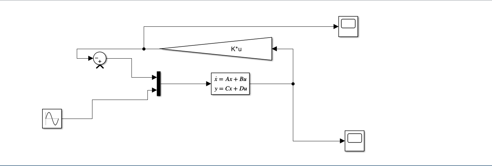
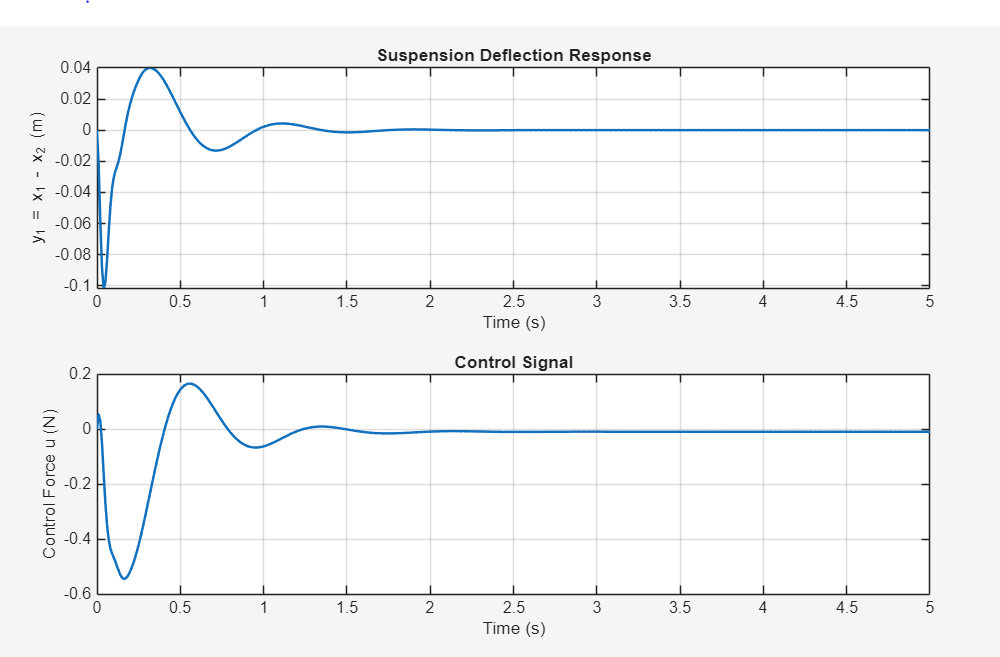

Reducing road-induced body vibration
A passive suspension cannot adapt its spring and damping behavior to changing road conditions. This project models one quarter of a vehicle and investigates how an actuator can use feedback control to reduce relative displacement between the body and wheel assembly.
Using Newton’s laws, the team developed a two-input model: the control force u(t) and road displacement W(t). Suspension travel is measured as y₁ = x₁ − x₂. The study compares the natural open-loop response, state-feedback gain selection using pole placement, and an LQR design in MATLAB/Simulink.

Figure 3.1 — Quarter-car active suspension model
The sprung mass represents the vehicle body and the unsprung mass represents the wheel assembly. The actuator applies equal and opposite forces between the two, while the road displacement excites the tire–wheel system.
Original report, PDF page 8 · Click image for full resolutionPhysical parameters and equations
The selected values below are the values reported in Table 4.1 and used in the supplied MATLAB scripts. The model uses a body mass, wheel mass, suspension and tire springs, and both damping coefficients.
| Parameter | Component | Selected value | Unit |
|---|---|---|---|
| m₁ | Sprung (body) mass | 300 | kg |
| m₂ | Unsprung (wheel) mass | 45 | kg |
| b₁ | Suspension damping | 2,000 | N·s/m |
| b₂ | Tire damping | 300 | N·s/m |
| k₁ | Suspension stiffness | 22,500 | N/m |
| k₂ | Tire stiffness | 200,000 | N/m |
View original parameter table (PDF screenshot)

The model's two transfer functions represent suspension travel per actuator force and suspension travel per road displacement. Controllability and observability are examined before constructing the controllers; the full derivations and matrices are documented in the PDF.
MATLAB step-response analysis
These are the original plots and printed measurements, extracted from the submitted report. The open-loop system has stable complex poles and displays damped oscillation, motivating improved transient control.

Figure 5.1 — MATLAB step-response performance metrics
The report prints 1.324 s settling time and 29.26% overshoot for the actuator-force transfer function. For the road-input transfer function it prints NaN settling time and Inf overshoot because the final relative displacement approaches zero, making standard stepinfo metrics unsuitable.
Original report, PDF page 18 · Click image for full resolution
Figure 5.2 — Actuator-force step response
The suspension deflection initially rises, overshoots, and then settles near 4.4 × 10⁻⁵ m for a unit actuator-force step. The damped oscillations indicate a stable but underdamped mechanical response.
Original report, PDF page 19 · Click image for full resolution
Figure 5.3 — 0.1 m road step response
A 0.1 m road displacement causes an initial negative deflection, followed by overshoot and decaying oscillations toward zero. This is an open-loop road-disturbance result, not the controlled response.
Original report, PDF page 19 · Click image for full resolutionKey distinction: the road-disturbance response returns close to zero because body and wheel eventually move together. A zero final value makes conventional percentage-overshoot and default settling-time outputs misleading; this is why the report shows Inf and NaN rather than useful road-step performance metrics.
State-feedback design and response
The state-space model was used to develop pole-placement feedback with Ackermann’s formula. The selected desired poles and gain calculations are available in Ackermann_Gains.m.

Figure 10.1 — Pole-placement Simulink model
This state-feedback model combines the reference/disturbance input, state-space plant and feedback-gain block. The diagram documents the simulation topology, but does not by itself validate the controller performance.
Original report, PDF page 38 · Click image for full resolution
Figure 10.2 — Pole-placement closed-loop response
The lower trace shows oscillation and convergence toward a nonzero level, while the upper control-force trace appears flat on its displayed scale. The figure does not clearly establish complete rejection of the disturbance; the displayed signals, units and input connections should be checked before claiming the target is met.
Original report, PDF page 39 · Click image for full resolutionThe supplied pole-placement output image does not unambiguously demonstrate the stated response specification; the page preserves the actual trace rather than reporting an unverified pass.
Linear Quadratic Regulator
An LQR controller minimizes a weighted state/control-effort objective. The provided LQR_Gains.m uses Q = diag(10⁴, 10², 10⁴, 10²) and R = 1; MATLAB calculates the gain through lqr(A,B,Q,R).

Figure 11.1 — LQR Simulink model
The closed-loop arrangement uses state feedback calculated through LQR. The weighting matrices penalize suspension states and control effort, determining the trade-off between performance and actuation.
Original report, PDF page 42 · Click image for full resolution
Figure 11.2 — LQR suspension deflection and control effort
The deflection response shows an initial negative transient, positive overshoot, and damped motion approaching zero. The control signal also decays, showing corrective action concentrated in the initial transient. This is the reported simulation, not independently rerun data.
Original report, PDF page 43 · Click image for full resolutionThe reported LQR response has a substantial initial deflection before returning near zero. The feedback force decays as the disturbance transient subsides. The plot alone is insufficient to claim that this design outperforms pole placement on every metric; a consistent numerical comparison would require running both models with the same inputs and signals.
Original report and executable files
The original report includes the full modeling derivation, transfer functions, state-space equations, pole locations, controllability and observability, controller equations, MATLAB code appendix and results. All supplied source files are preserved without changes.
| Code file | Purpose |
|---|---|
| Transfer_Functions_Step_Input.m | Transfer-function calculation and step responses |
| Ackermann_Gains.m | State-feedback gain calculation |
| LQR_Gains.m | LQR weighting and feedback gain |
| Simulink_Simulation.slx | Supplied Simulink model |
Engineering integrity: Figures and numerical results are taken from the original team report. MATLAB and Simulink have not been rerun or independently validated here.